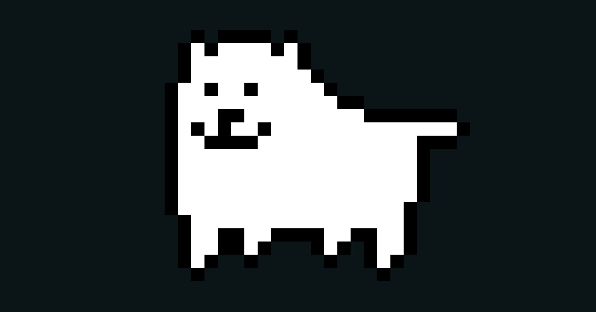

Here are two examples about how two of these songs, in a summary, impacted fans and games alike
Toby Fox made Megalovania a popular earworm. It appeared in games, like Super Smash Bros Ultimate, inspired remixes and covers, and reached mainstream media.

Frontman M. Shadows is a major fan of the Call of Duty series, That when he heard about Treyarch commissioning him & his bandmates, they sent him the full storyline and he made sure the song followed it.
Ready for the real deal? Visit the original Music in Games website here!